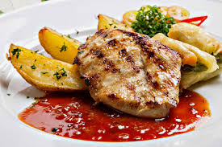

Chicken Steak

Description
Chicken Steak is a pan-seared or grilled chicken breast marinated and served with a savoury sauce and sides like mashed potatoes or vegetables.
It’s a versatile dish perfect for lunch or dinner.
Ingredients
- Chicken breast
- Salt and pepper
- Soy sauce
- Garlic and thyme
- Butter or olive oil
- Lemon juice
- Vegetables or sides
Steps
- Season chicken with salt, pepper, garlic, thyme, and lemon juice.
- Marinate for at least 30 minutes
- Heat oil or butter in a pan over medium-high heat
- Cook the chicken for 5–6 minutes on each side until golden brown.
- Let it rest briefly before slicing and serving with sides.
Home